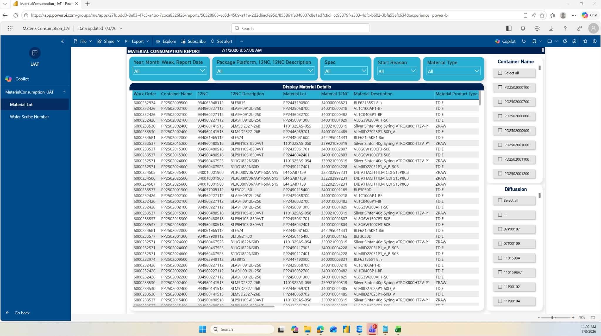
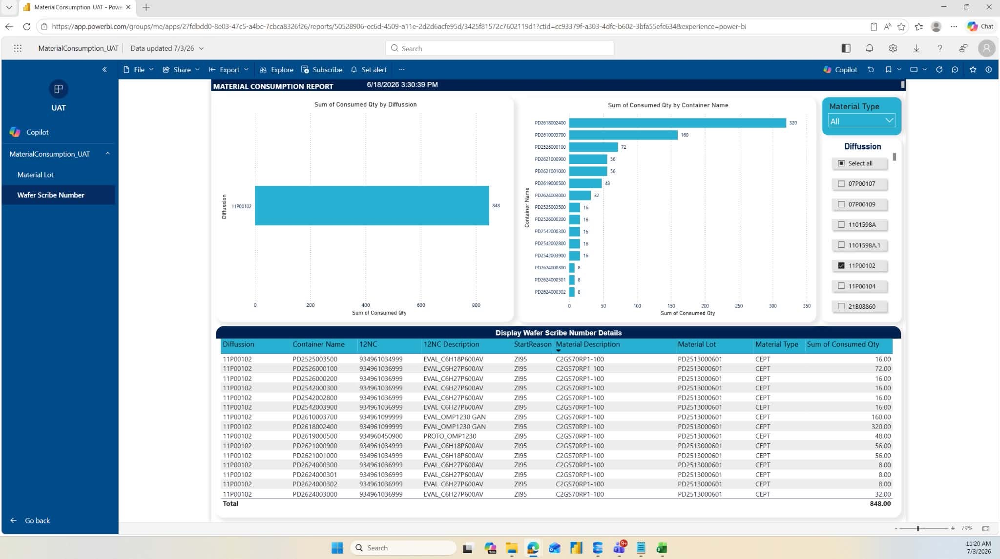

Company Overview
Ampleon Philippines, Inc. is a global semiconductor company that develops RF power solutions for industrial, communication, medical, and scientific applications. As an IT Intern, I work with the Information Technology Department to support software development, database management, reporting, and manufacturing systems.
This internship has allowed me to experience how technology supports production and business operations in a manufacturing environment.
Nature of Assignments & Tasks
My internship started with company orientation and technical training on SAP ERP, Camstar MES, SQL Server Management Studio (SSMS), and Power BI. I also perform daily SAP ERP monitoring to ensure production transactions are processed correctly.
As my internship continues, I have been working on SQL database development — creating tables, stored procedures, SQL jobs, and validating production data. I am also developing the Material Consumption Report, a Power BI dashboard requested by the Assembly Engineering and Process Control teams. The project involves data extraction, transformation, validation, dashboard development, client presentations, user feedback, and Release-to-Production (R2P) documentation.
Total Hours Rendered
My internship began on May 11, 2026 and is currently ongoing, with an expected completion date of July 27, 2026.
Company orientation and technical training on SAP ERP, Camstar MES, SSMS, and Power BI.
SAP ERP monitoring and validation of production transactions.
SQL database work and building the Material Consumption Report in Power BI.
Final dashboard turnover and R2P documentation.
Key Accomplishments
- Developing the Material Consumption Report using SQL Server and Power BI.
- Performing data extraction, transformation, validation, and dashboard development.
- Monitoring daily SAP ERP production transactions.
- Validating production data using the Camstar Test Server.
- Creating SQL tables, stored procedures, and SQL jobs.
- Presenting dashboard updates and gathering user feedback.
- Preparing Release-to-Production (R2P) documentation.


Conclusion
My internship at Ampleon Philippines, Inc. has been a valuable learning experience. It has helped me strengthen my knowledge of SQL, Power BI, SAP ERP, Camstar MES, and enterprise software development while improving my communication, teamwork, and problem-solving skills.
As I continue my internship, I look forward to learning more and contributing to future projects while preparing for my career in software development and data analytics.